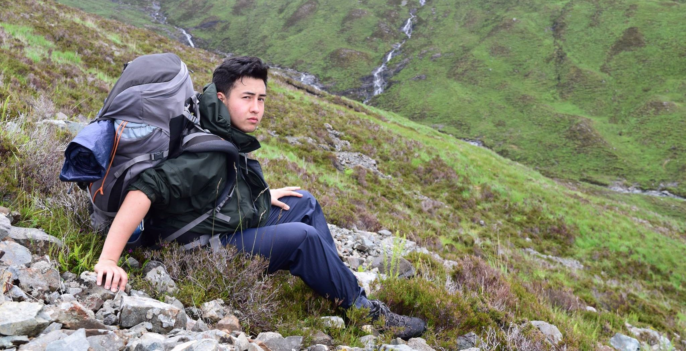

About Me

Alex is a computer science and biomedical science graduate with managerial experience in the media
analysis and customer service sector, which allowed him to develop his leadership, communication,
and organisational awareness. His leadership potential has been recognised in two organisations
leading to promotions, this was in recognition of his ability to build productive working
relationships.
He has also worked in media analysis, helping him develop his strong analytical skills, this coupled
with his computer science degree finally determined his path into software and testing. His
analytical skills have transferred from his time as a Team Leader which allowed him to identify
previously unseen issues. He created a system to predict the demand of produce based on previous
years in anticipation for the effect of COVID on the industry. This helped the company to meet
desired targets and reduced financial pressure.
Having spent part of his schooling in Bahrain, Singapore, and the UK, Alex has improved his ability to adapt to varying work and environmental settings.
Additionally, he has completed spells of voluntary work in India and Malawi,
giving him an appreciation of a broad range of culture and customs.
Working for Sparta has provided Alex with the ability and confidence to provide meaningful
consultation to clients. His innate passion for technology and his wide skillset compliments the
roles and responsibilities that are required of SDET's, making this an ideal profession to pursue.
Projects
| Project Name |
Description |
Year |
| API Group Project |
We used the SpaceX API to create a test framework which tests the API responses and requests using RestSharp.
As a team, we used GitHub as our Version Control System and utilised the Kanban board feature in GitHub to organise our sprints.
|
2021 |
| Three Tier Application |
Created a three tier application involving a front end tier which I implemented using WPF,
A business logic tier which supports the main core functions of the application,
and a database backend implemented using entity framework.
The application stimulates your short term memory through a game and stores the scores, allowing you to track your progress.
|
2021 |
| Code Katas |
I have continued to complete Code Katas to improve my coding ability.
|
2021 |
| Grading Calculator |
Created a secure website that allows you to input the grades you received in each module, with a calculation function that gives you the average percentage,
grade achieved, and overall award.
|
2020 |
Curriculum vitae
Professional Profile
A professional, committed, and loyal individual with a flexible attitude to work and the ability to quickly build productive working relationships with colleagues and clients.
With a range of transferrable skills and a willingness to adapt to different working environments, would add value to a new position.
Now seeking a new role to utilise existing skills whilst continuing to develop new ones.
Core Skills
- Proficient in: C#, Java and SQL
- Experience in: HTML, CSS, JavaScript, R, and PHP
- Experience working in Agile
- Analytical thinking skills
- Customer service and management skills
- Thorough with good attention to detail
- Excellent verbal communication skills
Career Summary
Prime Research, Oxford, Senior Media Analyst (January 2016 – January 2018)
- Collected data proficiently from relevant print, online, broadcast, and social media coverage.
- Produced a high-quality analysis through formatting and uploading of content.
- Structured media content in key unit following Prime’s set of analysis rules.
- Developed a deep understanding of the automotive industry.
- Monitored corporate, product, industry, and competitor trends in media for automotive companies.
- Managed time efficiently to ensure timely data delivery during peak coverage.
- Managed and trained a team of 4 members to provide concentrated analysis in one sector.
Vue Cinemas, Oxford, Team Leader (July 2019 – July 2020)
- Coordinated the team to deliver efficient customer service, maintenance, cleaning, and general organisation.
- Identified areas of improvement within my team and suggested ways to provide the best service possible.
- Drive sales by making staff aware of all promotions and incentives.
- Managed and ordered stock to meet the predicted demands of future customers.
- Ensured superior customer experience by addressing customer concerns, resolving problems on the spot, accurately explained details and care of merchandise.
- Earned management trust by being a serving key holder, with opening and closing responsibility of the site.
- Trained and served as a peer coach for new members of staff.
Education and Certifications
- ISTQB Foundation
- MSC Computing Science - Merit
- BSC (Hons) Biomedical Science - 2:2
- A Levels - Biology, Chemistry and Physics with an AS level in Mathematics
Additional Information
- Full and clean driving license
- Languages:
- English: Native
- Indonesian: Advanced Proficiency
- Spanish: Elementary Proficiency (GCSE A grade)
Interests
Leadership and Motivation
Regular involvement in competitive sports in school and university has made me familiar with working in team environments and accustomed to positive concepts such as self-reflection, growth, and intrinsic motivation.
Moreover, being appointed captain of the 2nd XI football team at school provided the opportunity to improve my leadership and motivational capabilities which I transferred to a work environment.
I was assigned as the Vice President of the Gaming Society by my peers at University, allowing me to organise events for large groups of people.
This led me to moderate an online community of over 500 members through the Gaming Society Discord server, organising key online social events during the COVID pandemic.
Communication and Organisation
I was the captain and in-game-leader of a semi-professional Counter-Strike: Global Offensive team, promoting my communication and organisational skills.
Additionally, captained two esports teams in university to compete in the National University Esports League, achieving three 3rd place finishes.
This prompted my selection for an “All-Star” match, raising over £500 for the Special Effect charity.
Tech and Creativity
Amateur content creation in the form of Twitch live-streaming and graphic design has enabled me to develop basic community management and branding skills.
High computer literacy has facilitated my rapid self-development, allowing me to emulate professional techniques.
This includes strong proficiency in the core Microsoft applications such as Word, Excel, and PowerPoint.
In particular the use of Excel’s Data Analysis tools and functions for statistical analysis.
Contact Me
Mobile Number: (+44)7500555132
Email Address: arae@spartaglobal.com
Click the links below to contact me through social media: